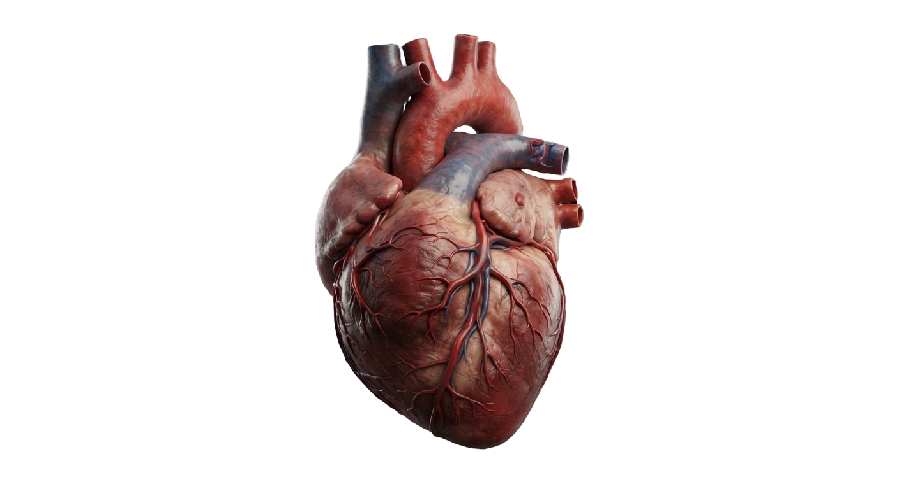

Sistema Circulatorio
El Motor de la Vida - Biología 4°C Sociales | Colegio Normal

Marco Teórico de Biología
Contenido completo extraído de los apuntes y PDF oficiales.
Integrantes del Grupo
Colegio Normal - 4°C Sociales
Genaro Gularte
Creador de la WEB
Desarrollo frontend, arquitectura SPA, animaciones GSAP y diseño Liquid Glass.
Augusto Macagno
Amigo mío
Investigación teórica de biología, contenidos del PDF y exposición oral.
Preguntas Frecuentes y Datos Curiosos
Hacé clic en cada pregunta para desplegar su respuesta.
❓ Preguntas Frecuentes
Late aproximadamente 100.000 veces diarias, bombeando más de 7.000 litros de sangre a través de todo el cuerpo sin detenerse ni un solo segundo.
Se debe al nivel de saturación de oxígeno unido a la hemoglobina. La sangre oxigenada (arterial) refleja tonos rojos brillantes, mientras que la carboxigenada (venosa) adquiere un tono rojo oscuro o azulado.
Aproximadamente 60 segundos en condiciones de reposo en completar un circuito entero desde el corazón, pasando por los pulmones, los tejidos y retornando.
El sistema nervioso simpático eleva la frecuencia cardíaca para aumentar el gasto cardíaco y suplir la alta demanda de oxígeno y nutrientes que exigen los músculos en actividad.
La sístole es la fase de contracción muscular donde se expulsa la sangre hacia las arterias, y la diástole es la fase de relajación donde el corazón se expande y se llena de sangre.
El miocardio posee una altísima concentración de mitocondrias y un suministro constante de sangre propia a través de las arterias coronarias, permitiéndole trabajar rítmicamente toda la vida.
Funciona como el marcapasos natural del corazón situado en la aurícula derecha, generando de forma espontánea los impulsos eléctricos que marcan el ritmo cardíaco.
Representa la presión sistólica (cuando el corazón se contrae e impulsa con fuerza, 120) frente a la presión diastólica (cuando el corazón se relaja entre latidos, 80).
💡 Datos Curiosos
Si desplegaras todos los vasos sanguíneos (arterias, venas y capilares) de un adulto en línea recta, alcanzarían una asombrosa longitud de más de 100.000 kilómetros (¡más de dos vueltas a la Tierra!).
El corazón humano genera tanta presión y fuerza mecánica que, simbólicamente, sería capaz de impulsar un chorro de sangre a una altura de hasta 9 metros.
La médula ósea roja de nuestros huesos produce cerca de 2 millones de glóbulos rojos nuevos por segundo para reemplazar de forma continua a los que cumplen su ciclo de 120 días.
El sonido clásico "lub-dup" no es el músculo contrayéndose, sino el golpe seco y cierre mecánico de las válvulas cardíacas al frenar el retroceso de la sangre.
En condiciones normales de salud, la sangre humana nunca sale de los vasos (sistema cerrado) y la sangre oxigenada jamás se mezcla con la carboxigenada (sistema completo).
El corazón de un reciéní nacido tiene el tamaño aproximado de una nuez, mientras que en un adulto equivale al puño cerrado de la persona.
El sistema linfático recupera aproximadamente el 10% del líquido extracelular que se filtra en los tejidos y lo devuelve limpio al torrente sanguíneo a la altura de los hombros.
A pesar de que la sangre sale eyectada a gran velocidad del corazón, en los capilares microscópicos disminuye drásticamente a unos 0,5 mm/segundo para facilitar el intercambio de nutrientes.
Enfermedades Cardiovasculares y Prevención
Patologías comunes, detección, prevención y advertencia médica profesional.
Infarto Agudo de Miocardio
Descripción: Obstrucción severa de las arterias coronarias que interrumpe el flujo sanguíneo y provoca necrosis (muerte celular) en el tejido cardíaco.
Cómo detectarlo: Dolor opresivo intenso en el pecho ("como un peso gigante"), irradiación hacia el brazo izquierdo, cuello o mandíbula, sudoración fría y falta de aire.
Cómo prevenirlo: Evitar el sedentarismo, no fumar, mantener una dieta baja en grasas saturadas y controlar el estrés.
Hipertensión Arterial ("Presión Alta")
Descripción: Elevación persistente de la fuerza con la que la sangre empuja las paredes arteriales por encima de los valores normales (120/80).
Cómo detectarlo: A menudo es silenciosa ("la asesina silenciosa"), pero puede causar dolores de cabeza frontales, mareos o visión borrosa en crisis.
Cómo prevenirlo: Reducir el consumo de sal, realizar actividad física regular, mantener un peso saludable y evitar el exceso de alcohol.
Arritmias Cardíacas
Descripción: Alteraciones o irregularidades en el ritmo eléctrico normal fijado por el nódulo sinusal (el corazón late muy rápido, muy lento o desincronizado).
Cómo detectarlo: Sensación de palpitaciones fuertes en el pecho, aleteo, mareos repentinos, desmayos o fatiga extrema.
Cómo prevenirlo: Evitar estimulantes en exceso (cafeína, bebidas energizantes), no consumir tabaco y realizarse chequeos cardiológicos periódicos.
Insuficiencia Cardíaca
Descripción: Incapacidad crónica del corazón para bombear el volumen de sangre necesario para satisfacer las demandas metabólicas del organismo.
Cómo detectarlo: Fatiga crónica al caminar, hinchazón (edema) en piernas, tobillos y pies, y dificultad respiratoria al estar acostado.
Cómo prevenirlo: Controlar la presión arterial, tratar la diabetes, llevar una dieta cardiosaludable y evitar el consumo de sustancias nocivas.
Trombosis Vascular
Descripción: Bloqueo u obstrucción de un vaso sanguíneo debido a un coágulo (trombo) formado por plaquetas sobre paredes arteriales dañadas o por inmovilidad prolongada.
Cómo detectarlo: Dolor punzante, inflamación, enrojecimiento y aumento de temperatura en la zona afectada (frecuentemente en extremidades).
Cómo prevenirlo: Evitar periodos largos de inmovilidad absoluta, mantenerse hidratado, caminar con frecuencia y usar medias de compresión si se viaja mucho.
Angina de Pecho
Descripción: Dolor torácico transitorio causado por una irrigación sanguínea insuficiente en el miocardio durante esfuerzos físicos intensos.
Cómo detectarlo: Opresión en el pecho que aparece al hacer ejercicio o ante estrés emocional fuerte y cede al descansar.
Cómo prevenirlo: Tratar la aterosclerosis a tiempo, controlar niveles de colesterol LDL y seguir pautas estrictas de vida sana.
Aterosclerosis y Arterioesclerosis
Descripción: Acumulación de placas de colesterol (ateromas) en el interior de las arterias, endureciéndolas y reduciendo su calibre interno.
Cómo detectarlo: Análisis de sangre para perfil lipídico (colesterol total, HDL, LDL) y estudios por imágenes como ecodoppler.
Cómo prevenirlo: Dieta rica en fibra y grasas saludables (omega-3), evitar comida chatarra ultraprocesada y hacer ejercicio aeróbico.
Anemia
Descripción: Trastorno de la sangre caracterizado por la disminución de glóbulos rojos o de hemoglobina, reduciendo el transporte de oxígeno.
Cómo detectarlo: Palidez cutánea, cansancio crónico, debilidad general, mareos frecuentes y uñas quebradizas.
Cómo prevenirlo: Consumir alimentos ricos en hierro (carnes rojas maguras, lentejas, espinacas) y vitamina C para mejorar su absorción.
Panel de Personalización Liquid Glass
Modificá en tiempo real los colores del entorno visual a tu gusto.